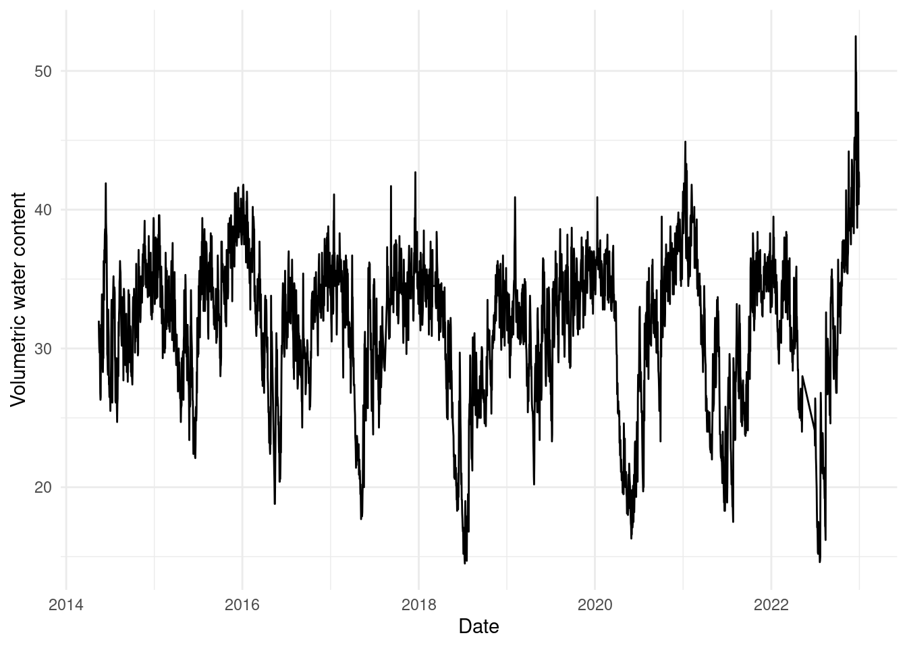
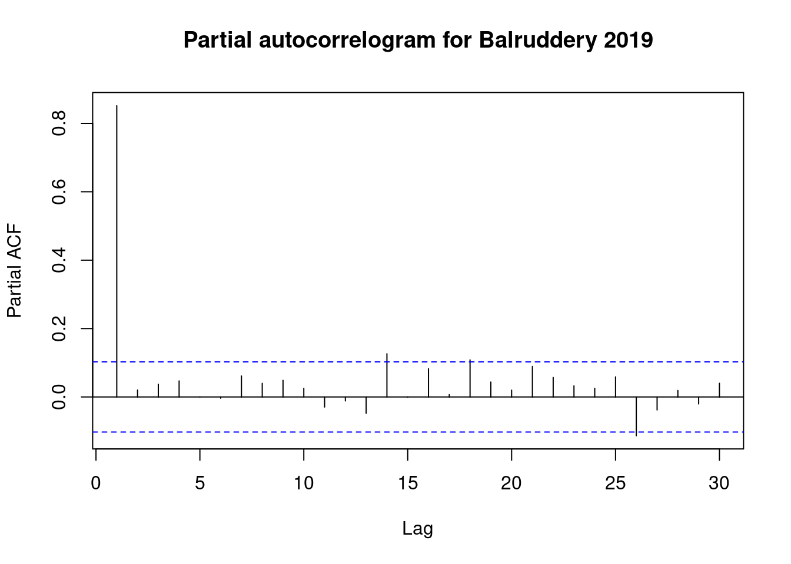
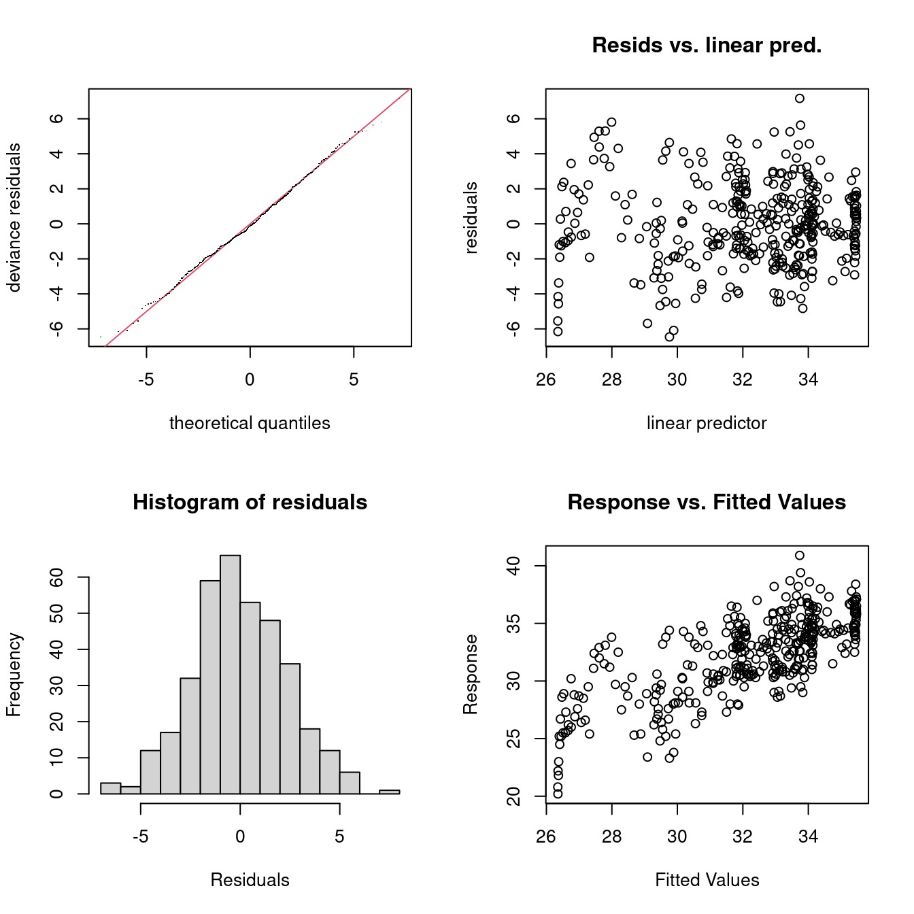
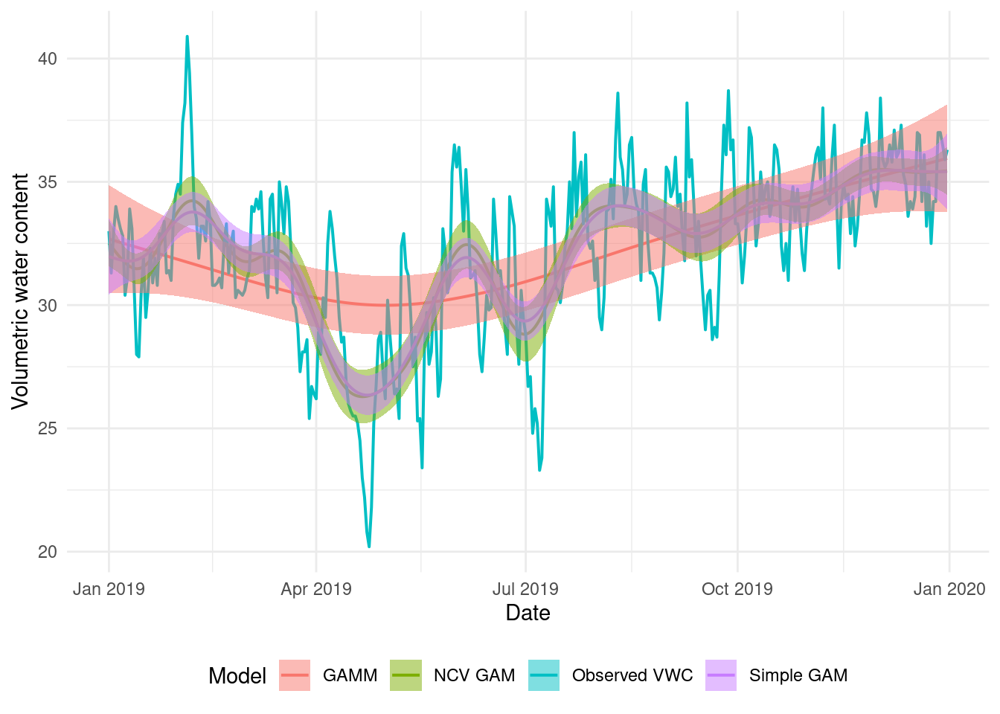
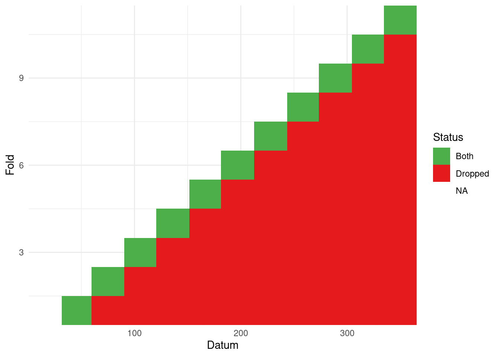

This is the second in a series on neighbourhood cross-validation, following from the introductory article here. The neighbourhood cross-validation fitting method is available in mgcv version 1.9-0 onwards. Here I’ll focus on using cross-validation as a replacement for using autoregressive modelling structures when dealing with temporally correlated data.
The primary reference for the NCV method is Simon Wood’s arXiv preprint.
It’s important to note that I know very little about time series analysis, the focus here is on the methods we can use to fit things with NCV. There may well be much better ways to analyse these time series! Don’t yell at me.
We’ll start by looking at a high-resolution time series collected by the fine folks at the UK Centre for Ecology and Hydrology1. Data are from the COSMOS experiment, which collects soil moisture data around the UK, using literally cosmic rays (fast neutrons, see here for more information). These data are collected at about 50 sites across the UK at a temporal resolution of every 15 minutes.
We will use the COSMOS-UK soil moisture data that has been aggregated at a daily resolution (mainly for computational time reasons). Note also that this is not the up-to-date version of the data, it’s based on when I downloaded it so the data ranges from mid-2014 through to the end of 2022.
The measurement we’re interested in here is the “volumetric water content” (VWC) as a function of other covariates such as space and time. VWC is derived from counts of fast neutrons in the surrounding area by a cosmic-ray sensing probe.
Loading the data, we have two data.frames: all_sites which has the full data set and uk_grid which is a prediction grid (which we’ll ignore here). Taking a peak at the all_sites data:
load("cosmos-processed.RData")head(all_sites)
SITE_ID SITE_NAME LONGITUDE LATITUDE NORTHING EASTING ALTITUDE
1 ALIC1 Alice Holt -0.858232 51.15355 139985 479950 80
2 ALIC1 Alice Holt -0.858232 51.15355 139985 479950 80
3 ALIC1 Alice Holt -0.858232 51.15355 139985 479950 80
4 ALIC1 Alice Holt -0.858232 51.15355 139985 479950 80
5 ALIC1 Alice Holt -0.858232 51.15355 139985 479950 80
6 ALIC1 Alice Holt -0.858232 51.15355 139985 479950 80
LAND_COVER SOIL_TYPE DATE_TIME PRECIP SNOW_DEPTH COSMOS_VWC ndate
1 Broadleaf woodland Mineral soil 2015-03-07 0.0 NA 40.8 16501
2 Broadleaf woodland Mineral soil 2015-03-08 0.0 NA 42.9 16502
3 Broadleaf woodland Mineral soil 2015-03-09 0.1 NA 38.8 16503
4 Broadleaf woodland Mineral soil 2015-03-10 0.0 NA 45.9 16504
5 Broadleaf woodland Mineral soil 2015-03-11 0.0 NA 39.7 16505
6 Broadleaf woodland Mineral soil 2015-03-12 0.0 NA 42.1 16506
month year
1 3 2015
2 3 2015
3 3 2015
4 3 2015
5 3 2015
6 3 2015
We won’t confuse things by trying to deal with all the sites here, so let’s just select one: Balruddery (which is over the road from my office) near Dundee. Let’s take a look at that time series:
library(ggplot2)library(dplyr)
Attaching package: 'dplyr'
The following objects are masked from 'package:stats':
filter, lag
The following objects are masked from 'package:base':
intersect, setdiff, setequal, union
bal <-subset(all_sites, SITE_NAME=="Balruddery")ggplot(bal) +geom_line(aes(x=DATE_TIME, y=COSMOS_VWC)) +labs(x="Date", y="Volumetric water content") +theme_minimal()

We can also plot this as years on top of each other, to get a feeling of how similar the series is between years.
library(lubridate)ggplot(bal) +geom_line(aes(x=DATE_TIME-ymd(paste0(year, "-01-01")),y=COSMOS_VWC,group=as.factor(year),colour=as.factor(year))) +labs(x="Date", y="Volumetric water content", colour="Year") +theme_minimal()
We can also look at partial autocorrelation plots using the built-in pacf2 function in R. Plotting this for the VWC shows the autocorrelation in the data.
pacf(bal$COSMOS_VWC, lag.max=30, main="Partial autocorrelogram for Balruddery")
Two things to think about here: - I’ve increased lag.max from its default, so we can see 30 lags. - The partial autocorrelation function is the right thing to look at here (I think) because we don’t want to look at every lag between each time point: we really want to see the autocorrelation between a given point and future data.
Let’s fit a dumb model to one year and see what’s happening
Starting by looking at Balruddery in 2019, we can try to fit a “standard” GAM to the data and see what happens.
Before we jump into modelling, let’s take a look at the autocorrelation in 2019 only:
# just get the 2019 databal_2019 <-subset(bal, year(DATE_TIME) ==2019)pacf(bal_2019$COSMOS_VWC, lag.max=30, main="Partial autocorrelogram for Balruddery 2019")

We’ll only use the date to explain the model. The ndate variable is a numeric version of the date information.
Note that I’ve bumped-up the maximum basis size. I could have increased it a lot more for this basic GAM, since it’s trying to fit to all that variation in the data. This is one of the many issues with fitting a “simple” model to this kind of high-resolution time series data – our usual ideas of how to increase complexity don’t make sense. We want to get to the underlying pattern for the year, rather than getting hung-up on short-scale phenomena.
Check plots show pretty good behaviour:
gam.check(b0)

Method: REML Optimizer: outer newton
full convergence after 6 iterations.
Gradient range [-2.903424e-06,1.933717e-07]
(score 865.2256 & scale 5.784242).
Hessian positive definite, eigenvalue range [3.383494,181.77].
Model rank = 20 / 20
Basis dimension (k) checking results. Low p-value (k-index<1) may
indicate that k is too low, especially if edf is close to k'.
k' edf k-index p-value
s(ndate) 19.0 14.9 0.32 <2e-16 ***
---
Signif. codes: 0 '***' 0.001 '**' 0.01 '*' 0.05 '.' 0.1 ' ' 1
As mentioned we could be increasing k but we won’t for now. Perhaps the tails of the residual distribution seem a little fat, but we won’t worry too much about this for our straw man model.
Looking at the fit:
# normally we'd need to construct a prediction data set here and use# the predict() function's newdata= argument, but since we have data for# each day, we don't need to supply that valuetemp <-predict(b0, se=TRUE)bal_2019$pred_b0 <- temp$fitbal_2019$pred_b0_u <- temp$fit +1.96*temp$se.fitbal_2019$pred_b0_l <- temp$fit -1.96*temp$se.fit# note that we can automate this using the pred_with_ci function# in the mgcvUtils package. We'll use that next time...ggplot(bal_2019) +geom_line(aes(x=DATE_TIME, y=COSMOS_VWC)) +geom_line(aes(x=DATE_TIME, y=pred_b0), colour="red") +geom_ribbon(aes(x=DATE_TIME, ymax=pred_b0_u, ymin=pred_b0_l),fill="red", alpha=0.5) +labs(x="Date", y="Volumetric water content") +theme_minimal()
This still looks very wiggly and I don’t think this really explains the overall yearly pattern in the data very well – we’re overfitting.
Autoregression via a GAMM
The gamm function in mgcv will allow us to fit an autoregressive process in addition to the smoother. This should handle some of the short-scale autocorrelation in the data. Here we’ll use an AR(\(p\)) process – allowing the previous \(p\) time points to influence the following point. This is a “usual” way of dealing with data that has autocorrelation.
Using github PAT from envvar GITHUB_TOKEN. Use `gitcreds::gitcreds_set()` and unset GITHUB_TOKEN in .Renviron (or elsewhere) if you want to use the more secure git credential store instead.
Downloading GitHub repo dill/mgcvUtils@HEAD
── R CMD build ─────────────────────────────────────────────────────────────────
* checking for file ‘/tmp/RtmpPxYCHW/remotes249042559886/dill-mgcvUtils-c36c58a/DESCRIPTION’ ... OK
* preparing ‘mgcvUtils’:
* checking DESCRIPTION meta-information ... OK
* checking for LF line-endings in source and make files and shell scripts
* checking for empty or unneeded directories
Omitted ‘LazyData’ from DESCRIPTION
* building ‘mgcvUtils_0.0.1.9000.tar.gz’
Installing package into '/home/runner/work/_temp/Library'
(as 'lib' is unspecified)
indicating strong positive correlation between the data at a lag of 1, then smaller correlations at further lags.
Using neighbourhood cross-validation
From the paper:
If it is reasonable to assume that there is short range residual correlation between point \(k\) and points in \(\alpha(k)\), but not between \(k\) and \(j \in / \alpha(k)\), then NCV provides a means to choose hyper-parameters without the danger of overfit that such short range (positive) autocorrelation otherwise causes
The big question, then, is “what does \(\alpha(k)\) look like for my data”?
Let’s start by using the autocorrelogram as a guide, and let’s also be a bit pessimistic and say that the neighbourhood goes out to lag 40 around each point (20 in each direction).
A reminder from the documentation:
`k` is the vector of indices to be dropped for each neighbourhood and `m`
gives the end of each neighbourhood. So `nei$k[(nei$m[j-1]+1):nei$m[j]]`
gives the points dropped for the neighbourhood `j`. `i` is the vector of
indices of points to predict, with corresponding endpoints `mi`. So
`nei$i[(nei$mi[j-1]+1):nei$mi[j]]` indexes the points to predict for
neighbourhood j.
We’re going to create a moving-window-type approach, for the 20 observations either side of each datum. In the literature, this is often referred to as “blocked CV” (Liu and Zhou, 2024; Snijders, 1988). We can do that relatively easily (though maybe somewhat cryptically) using the below code.
One issue with setting these neighbourhoods up is that we aren’t 100% sure whether the computer is doing what we want. I made a wee tool to visualise this for time series (at least) to check what the cross-validation structure you created looks right. You can find that as part of the mgcvUtils package on github here. We can then pass the neighbourhood structure to it and see what it produces:
vis_nei(nei)
The horizontal axis indexes the data, the vertical gives the fold. So for the first fold (bottom row) we see the 20 observations after the first, with the window increasing its width until we get a full 40 data included in the block. We can see here that the elements to drop and predict (“Both”) form a band over the data3. The uncoloured part of the data is used to fit the model.
Now we’re happy with the neighbourhood structure, we can proceed to model fitting.
Warning in max(ids, na.rm = TRUE): no non-missing arguments to max; returning
-Inf

What about other cross-validation schemes?
Short-term, forward prediction
Instead of having a moving window around each datum, we could instead try a predict-forward scheme where we take data up to a given month and predict one month ahead (ignoring any future data). This means that as we work through the timeseries, we have more information (for the last set we have January-November data to work with).
Warning: tz(): Don't know how to compute timezone for object of class numeric;
returning "UTC".
mdays <-month(ymd(mdays))nei <-list()nei$k <-c()nei$m <-c()# let's write this as a for loop because it's easy to think aboutfor(i in1:11){# drop days after in this month iind <-which(mdays > i)# drop nei$k <-c(nei$k, iind) nei$m <-c(nei$m, length(iind))# want to predict forward 1 month iind <-which(mdays == (i+1)) nei$i <-c(nei$i, iind) nei$mi <-c(nei$mi, length(iind))}nei$m <-cumsum(nei$m)nei$mi <-cumsum(nei$mi)
What does that look like?
vis_nei(nei)

(Note the difference in the plot compared to the previous examples where we only had one colour, now we have differing leave-out and prediction sets.)
Now fitting that model and making predictions as before:
I’ve plotted the b2 fit here in green for comparison. They look quite similar, but there is a difference in how big the May-ish dip is.
What about restricting the prediction neighbourhood?
Taking the scheme that we saw in b2 again, but this time just predicting back for the middle datum in the dropped set, we might expect to see some difference in the results.
# construct this the other way around, we want to predict each point:nei <-list()nei$i <-1:365#partygirlnei$mi <-1:length(start)# now take the 20 either sident <-lapply(nei$i, \(x){max(c(1, x-20)):min(c(365, x+20))})nei$k <-unlist(nt)nei$m <-cumsum(lapply(nt, length))# let the set we're predicting to be just the datum in the middle of the# training set# this is a bit wonky at the edgesvis_nei(nei)
Again, I’ve plotted b2 in green for comparison. We again see a very similar smooth but the uncertainty band is much wider until later in the dataset. We might think this is more realistic (the earlier months are much more variable than the latter ones), but we need a bit more thought to make sense of this…
What does this mean? Why are these results different? Can we gain some insights and use this to help construct cross-validation schemes in future?
What does cross-validation do?
Given cross-validation is a relatively “simple” idea: leave data out, fit a model, and predict, it’s actually a bit troubling that its not 100% obvious what it’s doing in terms of fitting in a completely statistical sense – what are the predictions representative of? Fortunately, there’s a nice paper for that.
Bates et al. (2024) explain what cross-validation is doing internally and what it is that the CV score is estimating4. They find that it estimates “the average prediction error of models fit on other unseen training sets drawn from the same population.” That’s contrary to what we might think, that the estimate if of “the prediction error for the model at hand, fit to the training data.”
Let’s unpack that a little and then apply it to the results we have above. If we’re taking subsets of the data fitting to them and then predicting back on those same sets, then the cross-validation score is estimating the average prediction error on the training sets (which weren’t included in the testing set used to fit the data). For our first example with NCV (b2), where we had a blocked, moving window design to our cross-validation scheme, we can see that we have a model that generally does a reasonable “average” over the time series.
Our “short-term, forward prediction” model (b3) looks like it’s overfitting a little to the late April dip in water content. Since the folds are by month, it seems that the model overfits to that dip:
We make our predictions for April and can’t help but fit as well as possible within each month (conditional on the overall smoothing parameter value, we still have to be smooth, but we can get a bit closer to the data).
For the b4, the modification of b2 where we only predict back to the middle value, we see a much wider confidence/credible band around the mean prediction. Again, thinking about this in terms of minimizing average prediction error helps us make sense of what’s happening here. For a larger prediction neighbourhood, some things come out in the wash better: we overfit somewhere but that underfits somewhere else, so the result for that fold isn’t as bad. When we predict only 1 point (and don’t include the autocorrelated data around it) we become more uncertain, since each of those differences between the fitted and observed values5 are then considered alone, without the neighbours “helping” to average things out.
Thinking about the “real” objective of NCV (average prediction error on unseen data) helps us understand what’s going on here.
Hopefully this is a helpful lesson in thinking about how NCV works and how the schemes used to fit the model can give rather different answers.
References
Bates, S., Hastie, T. and Tibshirani, R. (2024) Cross-Validation: What Does It Estimate and How Well Does It Do It? Journal of the American Statistical Association, 119, 1434–1445. ASA Website. DOI: 10.1080/01621459.2023.2197686.
Liu, S. and Zhou, D. J. (2024) Using cross-validation methods to select time series models: Promises and pitfalls. British Journal of Mathematical and Statistical Psychology, 77, 337–355. DOI: 10.1111/bmsp.12330.
Snijders, T. A. B. (1988) On Cross-Validation for Predictor Evaluation in Time Series. In On Model Uncertainty and Its Statistical Implications (eds. M. Beckmann, W. Krelle, and T. K. Dijkstra), pp. 56–69. Berlin, Heidelberg: Springer Berlin Heidelberg. DOI: 10.1007/978-3-642-61564-1_4.
Footnotes
I have a half appointment at UKCEH, they really are nice folks↩︎
Note that the pacf function assumes that your data are in order.↩︎
If we had disjoint sets for the leave out and predict sets, we’d see additional colours and pattern here. See later on for an example.↩︎
They also explain a lot of other stuff, it’s a nice paper!↩︎
Well, actually we should think in terms of the model deviance if we’re really trying to think like the model.↩︎